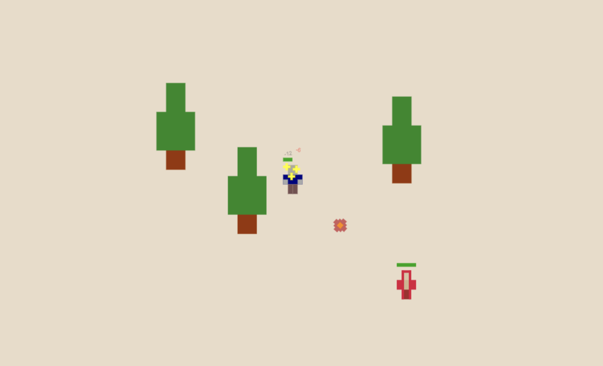
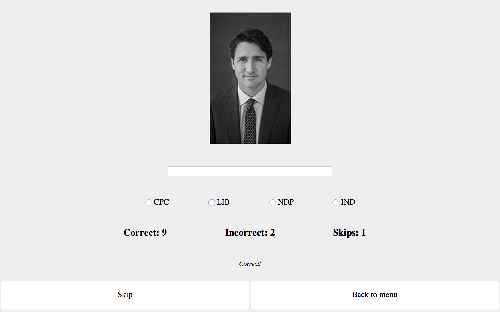
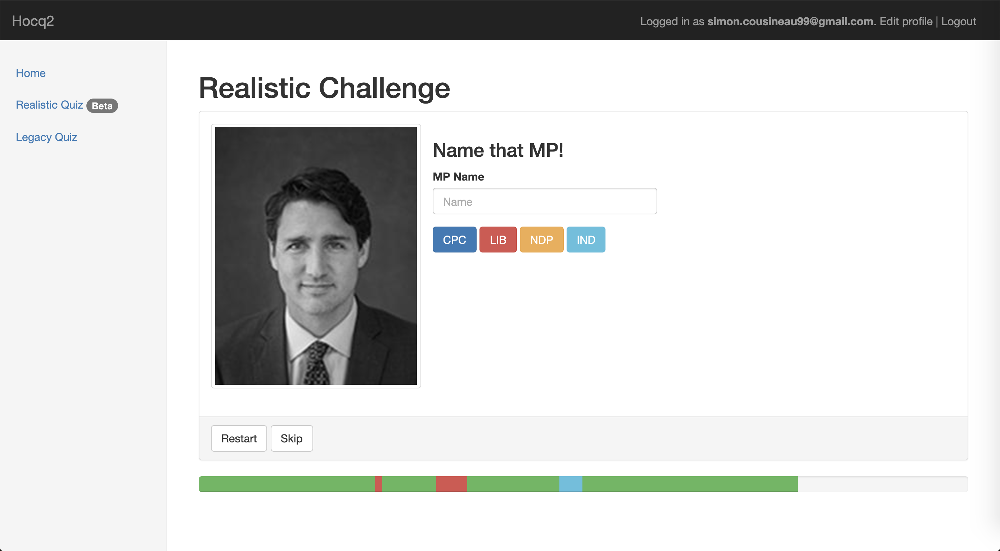
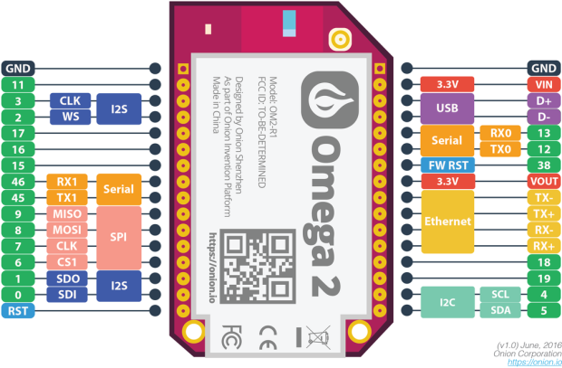

Projects

Node.js Web Game (Chaotic-Engine)
Typescript, Node.js, Socket.io, Html5 Canvas
Developed a web game engine using a Node.js server and Socket.io to connect multiple players to a single game world. Client-side rendering is done using HTML5 Canvas, and a custom graphics specification format. A simple, inheritance-based component definition system is used to facilitate the creation of new game objects.
Automatic Test Scaffolder (QAssistant)
Typescript, VSCode Api
Developed a VSCode extension that automatically creates test files and scaffolds test cases. Implemented a flexible configuration which allows support for multiple programming languages.

House of Commons Quiz Game
Java, Swing
Developed an efficient study tool in Java to help House of Common Pages effectively recognize and name all 338 Members of Parliament. Used Swing to implement the user interface.

House of Commons Quiz Game v2 (hocq2)
Ruby on Rails
Redesigned and implemented the House of Commons MP Quiz game in Ruby on Rails, in order to meet demands for ease of access and use, and to facilitate deployment of new features.

MIDI Controller
C++, Python
Developed a MIDI (Musical Instrument Digital Interface) controller using C++ for the Onion Omega board. Wrote a simple MIDI interpreter in Python to process incoming MIDI commands.

XY-Platform
C
Currently developing two-axis precision-controlled system, capable of navigating user entered coordinates, using the Texas Instruments MSP430FR4133 board and C, as part of my Prototyping and Instrumentation course project.
Experience

Back-End Developer Intern - Shopify
Ruby on Rails, React, GraphQL, Slack API
Worked on internal tools, such as the internal wiki and employee directory integration, in Ruby on Rails. Planned and implemented a Slack integration for these tools, while keeping scalability and upcoming features in mind. Contributed to crucial internal tools projects, including Shopify’s Internal App Engine for rapid app prototyping and Shopify’s research portal. Demonstrated strong communication abilities by effectively working with many in-house and remote coworkers, and through regular feature demonstrations.
Front-End Developer Intern - Shopify
React, Typescript, Scss, Jest, Enzyme
Developed enterprise commerce software solutions for merchants around the world, using React, Typescript, Html and Scss. Tested application functionality and ensured adequate test coverage using Jest and Enzyme testing frameworks. Maintained internal software tools to enable fast and reliable development. Communicated with team members to coordinate and solve complex problems. Documented best practices when designing and implementing software applications.
Mobile Application Developer (Coop) - Kinaxis
AngularJs, Typescript, Scss, Jasmine, Protractor
Brought to life new feature ideas suggested by customers and product managers using cutting edge technologies and frameworks, such as Typescript, Html, Scss, and AngularJS. Ensured code was well tested by writing Jasmine and Protractor tests, as well as keeping existing Selenium tests up to date. Solved complex implementation and optimization problems with other team members to ensure optimal performance. Demonstrated strong communication abilities through daily team meetings and regular feature demonstration days. Properly managed time while working independently in order to meet established deadlines.